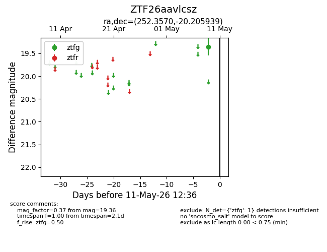
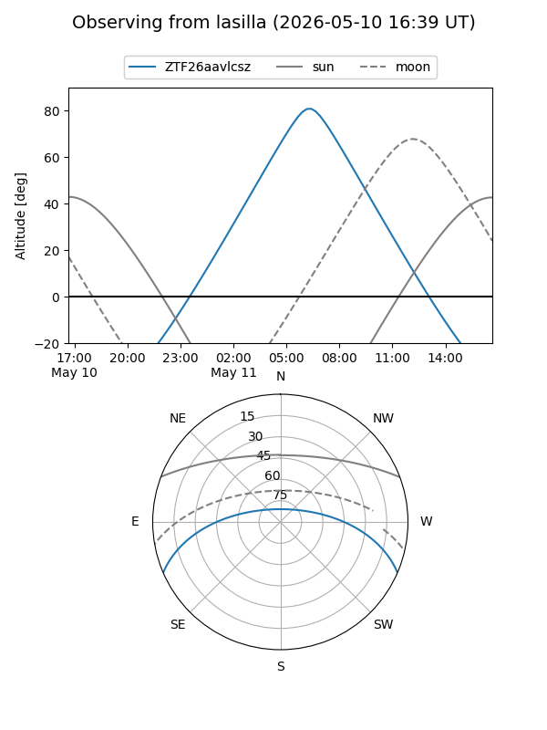
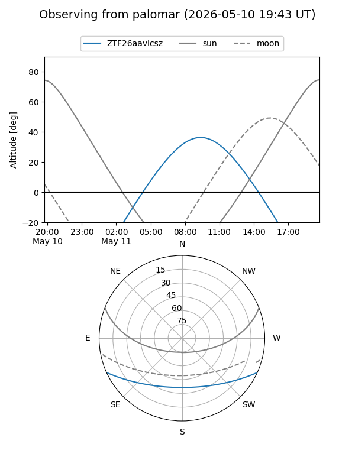

ZTF26aavlcsz
Target ZTF26aavlcsz at 2026-05-11 12:38
Aliases and brokers:
FINK: link
Lasair: link
ALeRCE: link
alt names
ZTF26aavlcsz (ztf,fink_ztf)
Coordinates:
equatorial (ra, dec) = 252.3570,-20.20594
equatorial (HMS+DMS) = 16:49:25.69,-20:12:21.38
galactic (l, b) = (359.9568,+15.45253)
Flags:
Photometry:
last ztfg=19.36
1 ztfg detections
Lightcurve

Visibility


Additional plots